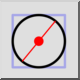

Центр, діаметр
Панель інструментів / Піктограма:


Меню: Побудова > Коло > Центр, діаметр
Шорткод: C, A
Команди: circlediameter | ca
Панель інструментів / Піктограма:


Цей інструмент дозволяє створювати кола із заданим центром і діаметром.